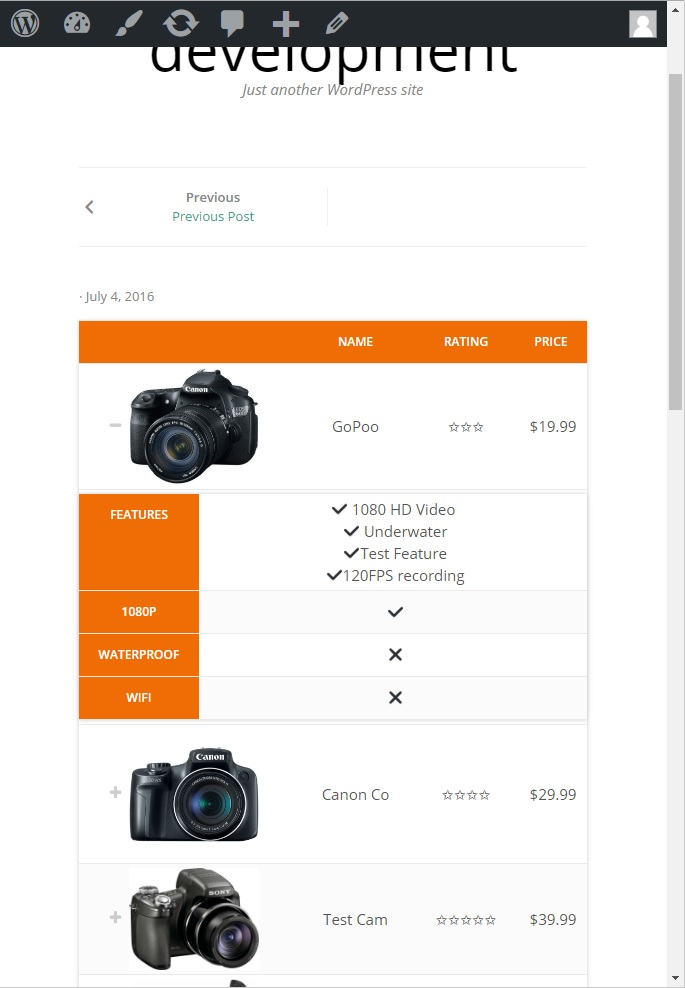

Welcome To JTRT Docs Website
This website will guide you through the JTRT plugin to ensure your tables are responsive, and ready for production. JTRT tables does a lot of things in the backend, so the UX isn't very pretty which is why this website / guide / docs is needed. If you have any question, or issues with the plugin, please create an issue link on GitHub or contact me directly and I will be happy to help you.
How Does This Plugin Work?
JTRT Tables is a wordpress plugin which help users create responsive HTML data tables on their website without the need to know any HTML or CSS. This is because the plugin features a back-end table editor which the user can utilize to edit their table as they see fit. The responsive part works by "hiding" columns when the screen size gets below a certain width. For example, if you have a table with 5 columns and on the mobile the table flows off the screen, you can "hide" 2-3 columns to make the table less fat. Hidden columns can easily be accessed by clicking on the row / plus icon. Example image below.

How To Guide
There is a step by step guide to working with the plugin written on my GitHub project page which you can view here.
There is also a video tutorial (poorly made, sorry!) which will go thorugh the steps in video which you can find here.
FAQ
- The plugin doesn't activate! There is a fatal error with the shortcode.php file! YOUR PLUGIN SUCKS!
- Sorry about that. Unfortunately the reason you are seeing this error is because the PHP version on your server is outdated and below the current standards. The best thing to do is upgrade you PHP version to something above 5.3, not only will this solve issues with other plugins as well, but you will also secure your server since older versions of php is vulnerable to script kiddies..
- I added images to my table cells but they are not working!
- The reason is because you need to set your column data-type to HTML otherwise the plugin will filter out anything but strings, escaping out HTML characters. The way you can set your data-type to html is clicking on the header you want to edit, and when the modal comes up, there should be a place to change your data-type with a select box.
- I added links to my table cells but they are not working!
- See above.
- My table is not saving in the backend?! What gives?!?
- This is a known issue. The problem comes from firefox and sometimes due to plugin compatibility issues. If you run into this issue please contact me with as much detail about your setup, browser and the procedure you took to reproduce the error. Thank you.
- I can't do [insert issue]
- Please contact me through email or create a ticket on github. I will do my best to help out.
- Can your plugin do [insert feature]?
- If there is a feature you'd like to see added let me know and I will try to make it happen if its viable.
Support The Plugin
There is no paid version for this plugin and I don't have any plans to monitize it. The plugin was a personal project and a way for me to learn. I gained a ton of knowledge which is priceless. If you wish to support this plugin however, leaving positive reviews, feedback and suggestions definately goes a long way.